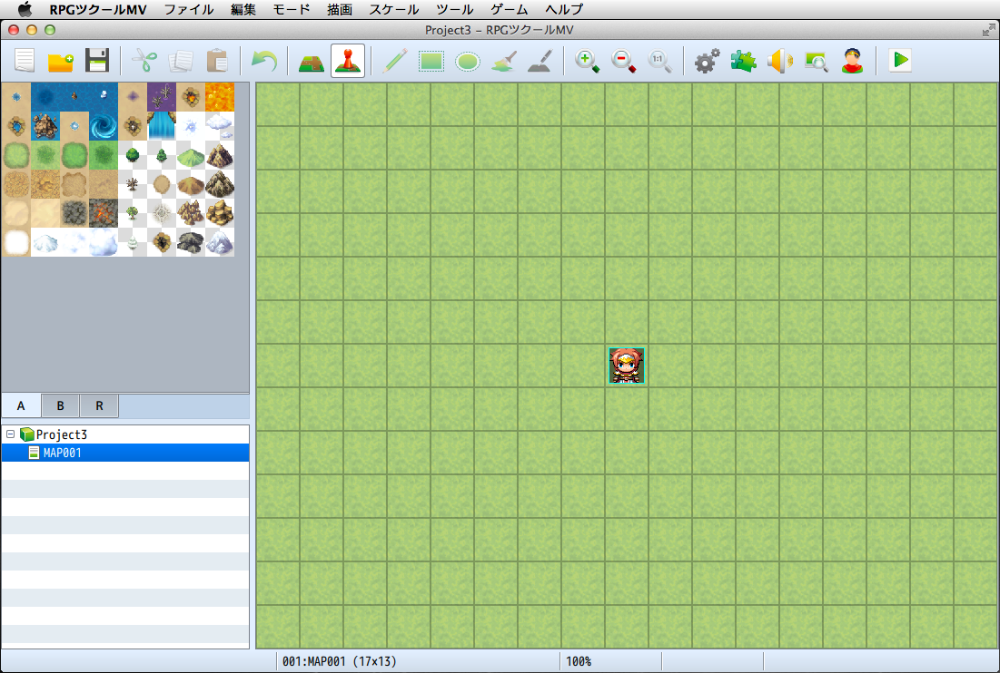

フォーマット対応
Mac版RPGツクールMV
RPGツクールMVではMacユーザー待望のMac版がリリースされました。Windows版での使いやすさはそのままに、Macユーザーにも馴染みの深いインターフェースでのゲーム作成が可能です。

マルチプラットフォーム対応
ゲームがHTML5形式になり、Windows、Mac OS X、Android、iOSなど様々な環境に向けて配布ができるほか、Web上でそのまま公開することも可能になりました。
詳細は［出力フォーマット］の項目をご覧ください。